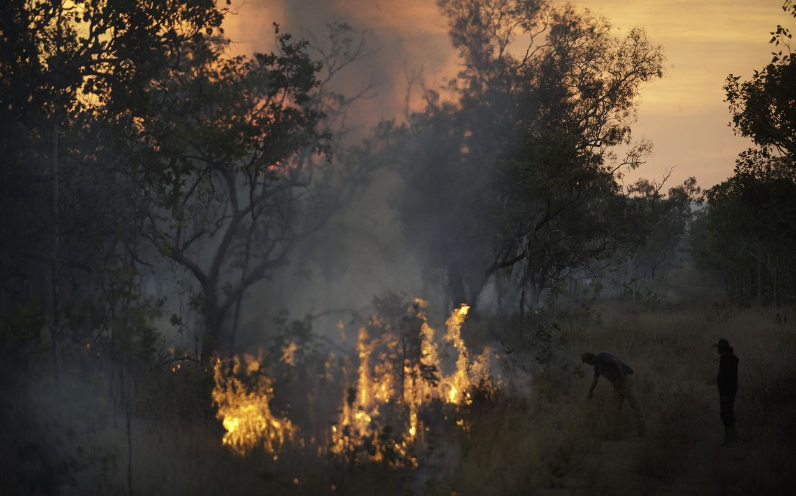
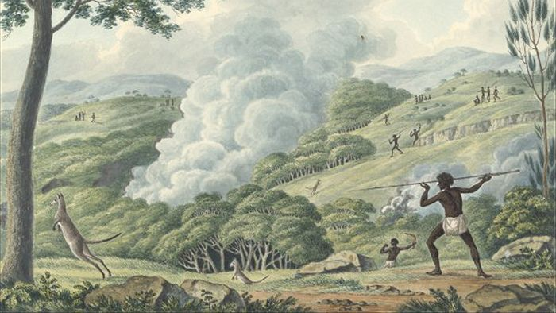
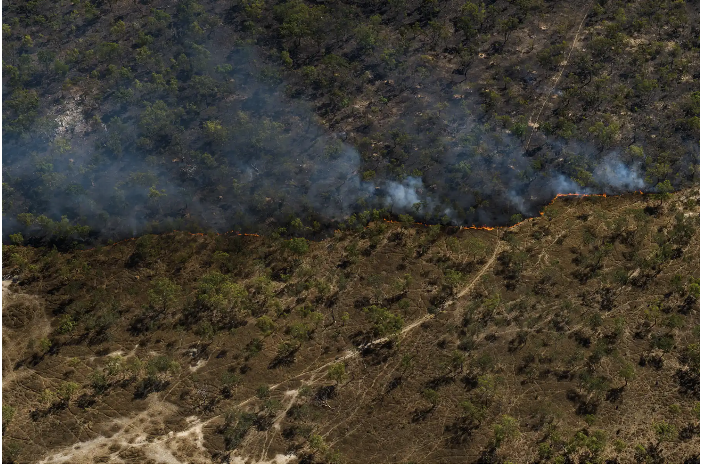
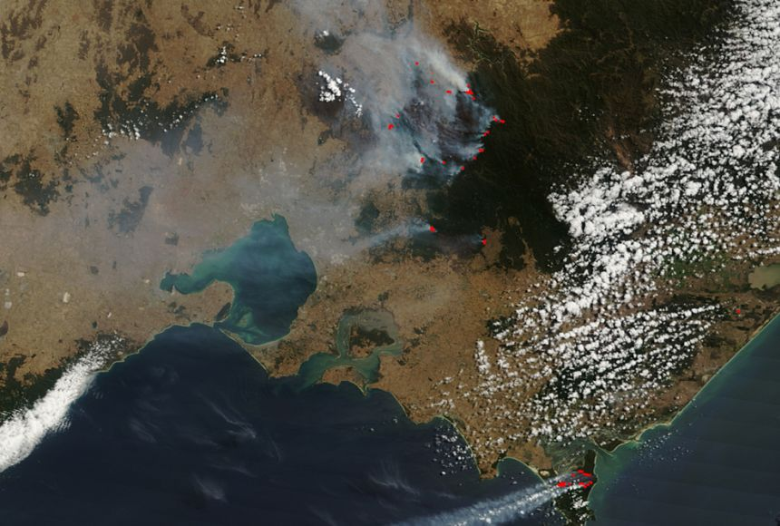
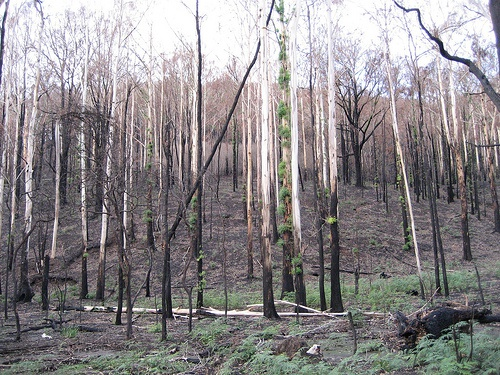
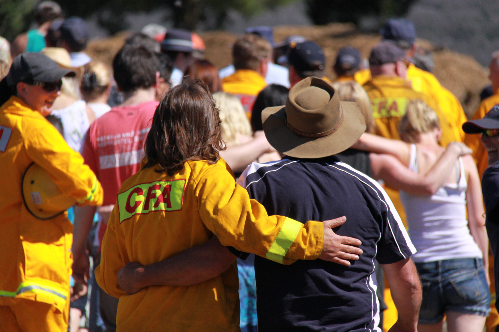
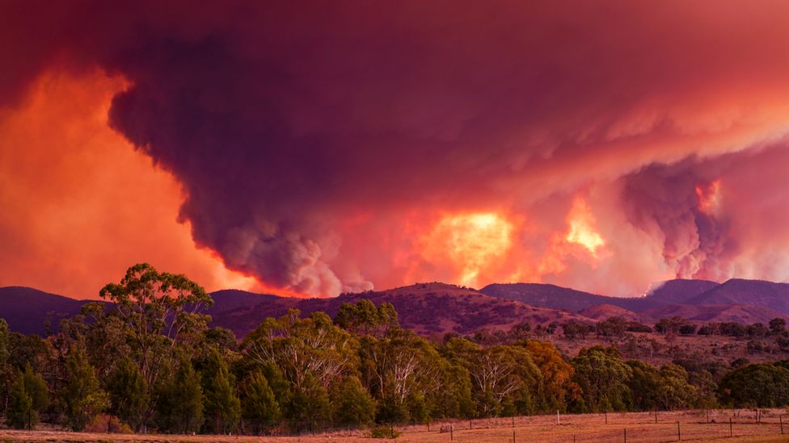
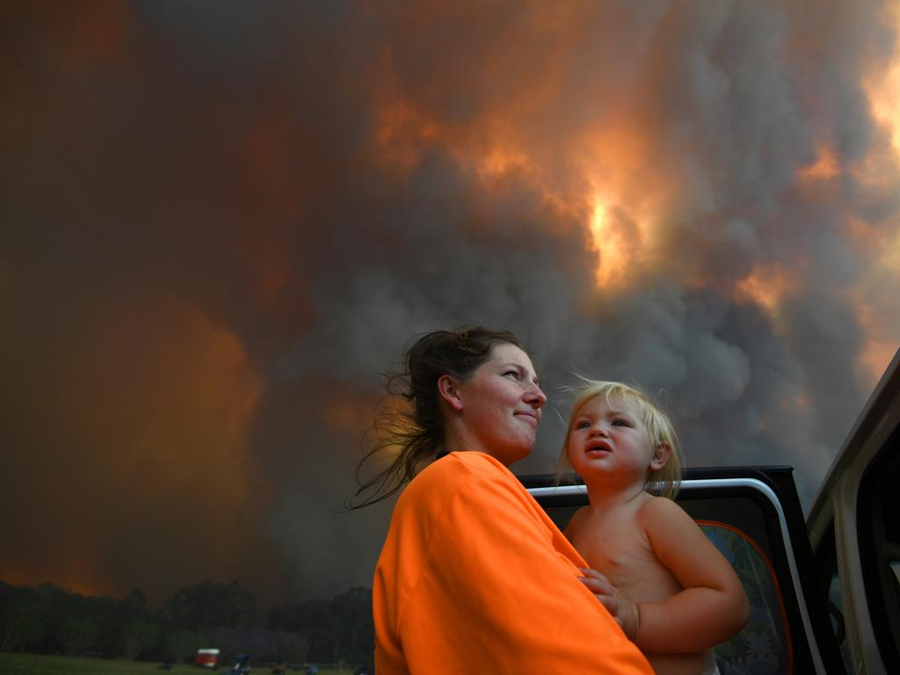
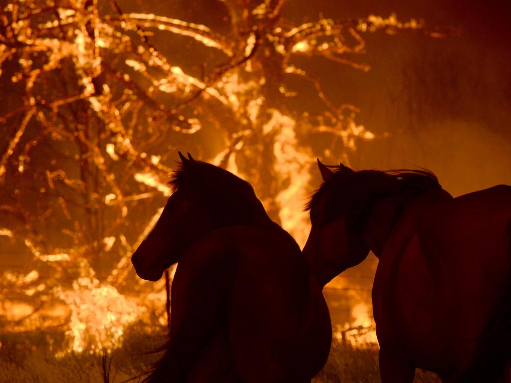

Introduction
Bushfires is a broad term often used to describe an expected grass, forest or scrub fire. In Australia,
they are part of the environments natural cycle, forming a complex relationship to both plants and animals. Dry
sticks, grass, twigs and leaves can all provide fuel to these fires (The Australian Institute for Disaster
Resilience, 2023).
Bushfires occur from a variety of different sources, often by natural causes. Although humans can also
participate in the creation of a bushfire, on purpose or not (The Australian Institute for Disaster Resilience,
2023). Fires are a part of the bushes ability to renew and produce new life, although for humans, they pose the
destruction of life, livelihoods and property.
The cycle of renewal they propose is inherent, encouraging new growth, triggering germination into seeds
both in the ground and above. Its destruction also can provide homes, such as hollowed or burnt out trees and
logs, which can provide animals areas to nest (NSW Department of Planning and Environment, 2023).
Although, in modern day society, there are more drastic consequences. Rising temperatures and an unstable
climate means Australia hasn't been able to regulate its natural cycle of bushfires, leading to serious
consequences. For example the Black Saturday bushfires, in 2009, which killed 173 people and spread further than
4,500 square kms (National Geographic Society, 2022).
The effects must be examined to determine how drastic fires may become, and how that reflects the past, and the
present.
History of Bushfire Impact & Its Effects
Australia's History with Bushfires is vast and dates back thousands of years, to when the First Nations
people, the traditional owners of the land cared and managed it. They used bushfires to renew the land and
vegetation, as well as to clear areas to hunt and for spiritual and ceremonial purposes (The Nature Conservecy,
2023).
These fires, and the natural burn of bushfires in general create habitat and protect animals like finches
and small marsupials. The backburning and lighting of fires to care for the land kept the dry kindling from
building up, and the bushfires from being as destructive and deadly. The indigenous land care kept the bushfires
from burning larger, instead burning smaller areas, without obliterating the entire habitat. Without this,
wildlife have their entire habitats destroyed, with little to no food or vegetation left. This tool for land
management is seen as one of the most prominent in the world due to its intertwining social, spiritual and
scientific values.
The burnings were controlled down to each aspect, what temperature, the intensity, the size and what
ecosystems were targeted (Elodie Fache, Bernard Moizo, 2015). This tool of land management provides connection
for First Nations people to their country and has always been fundamental in ensuring "the maintenance of the
ancestral domain and thereby the continuation of the socio-cultural domain" (Elodie Fache, Bernard Moizo, 2015).
Aboriginal peoples interaction with this form of land care is something that is necessary on a variety of
mentioned levels, so significant, its impacts are regarded today. History living on, and altering our
perspective on bushfires and their damage. An example of these techniques practised today are by the Kimberley
Land Council. They have implemented a program to combat the sudden stop in practise and burning due to the rapid
colonisation of Australia (KLC, 2022). Specifically the program focuses on lighting ‘cool’ fires, the specific
technique difference from the western management ways, which are more destructive then renewing. (KLC, 2022).
1 / 3

'Controlled Burn' - Dusk falls on a burning grassland in Northern Australia
(The Nature Conservecy, Ted Wood, 2023)
2 / 3

'Aboriginals Using Fire to Hunt Kangaroos'
(Joseph Lycett, 1775-1828)
3 / 3

Relatively Safe 'Cool' Burns Creating Firebreaks
(The Conservation, 2020)
❮
❯
Present Day Bushfire Impact & Its Effects
Modern Day Australia deals and manages the effects of bushfires differently to the past, but with
recognition in some areas to the affluence of the First Nations management. It is important to recognise that
modern Australia hasn't always, and in some places, still do not implement the First Nations land care
techniques mentioned previously. This effects our current society on a majority of different levels. Bushfire
management strategies that Aboriginal people have implemented for decades is also a way to connect and involve
in country and is essential in continuing spiritual, ceremonial and general practises. Without those practises
being properly enabled, there is both a scientific and cultural loss.
On a larger scale, the way indigenous people have managed the land has prevented severe and destructive
fires for centuries. Without it, the effects of bushfires can become deadly. Fires with increasingly bad effects
have become "more common in the 20th and 21st centuries, due to changes in land management" (Indigenous
Knowledge Institute, 2023). Changes including restrictions being placed on areas able to be backburnt due to
increasing infrastructure and land use. (Rachid Annab, 2023).
On a different level, climate change also has increased the effects of today's bushfires. The earth has
warmed 1.1°C over the past century due to rising Co2 levels in the atmosphere (Stefan Doerr, 2022). This has
increased the tendency for more warm and dry conditions, making environments much more flammable due to dried up
vegetation and other dead plants. Fire season, the length of time where fires are more likely to start, has
"lengthened by 27% globally" (Stefan Doerr, 2022). This is bad news for our current society and we have already
seen the tragic effects these destructive fires can have.
1 / 3

'Red squares mark active fires, burning near the Great Dividing Range, threatening the water
supply of Victoria's most populous city, Melbourne'
(Nasa, Jeff Schmaltz, Modis Rapid Response Team, Goddard Space Flight Centre, 2023)
2 / 3

Black Saturday bushfires at Kinglake
(Australian Institute for Disaster Resilience, 2009, 2023)
3 / 3

CFA Volunteers and People with their arms around each other on Black Saturday
(Australian Institute for Disaster Resilience, 2009, 2023)
❮
❯
Future Percived Bushfire Impact & Its Effects
Changes in how the land is managed, as well as the climate, mean that Australia's future interaction with
bushfires, are not looking too positive. Climate change in particular, will have drastic effects, increasing
both the length and the predictability of bushfires (Adapt NSW, 2023). The severity of these fires will increase
due to these factors, which poses a large threat to the lives and infrastructure of Australian people.
The future effects of bushfires have already showcased their deadly capabilities. For example, the
2020/2019 bushfires on the east coast set records for its destruction. Burning a total of over 21% of the
forested area, an unprecedented number, more than anywhere seen in the world, let alone Australia (Norman B,
Newman P & Steffen W, 2021). These fires effected the air quality of many areas, Canberra registering an air
quality index of "4650, more than 23 times the hazardous level" (Norman B, Newman P & Steffen W, 2021). This was
similar along the eastern coast, with thick black smoke coating Australia and its communities for months.
By acknowledging the differences in our climate and how it interacts with bushfires, Australia will be
able to adapt, changing both how bushfires and handled, and perceived (Adapt NSW, 2023). Although as a society,
it requires understanding that the increasing threat of bushfires is directly correlated to climate change.
Which is difficult, especially regarding the fact that climate change has played a role in the effects bushfires
have had for decades now, this is not a recent issue. It may cost Australia its people and its communities for
individuals to be swayed into recognising the link in climate change.
1 / 3

The 2019-2020 fire season was particularly challenging for Australia
(Martin Ollman, 2020)
2 / 3

Sharnie Moren and her 18 months old daughter Charlotte look on as thick smoke rises from
bushfires near Nana Glen, near Coffs Harbour.
(Dan Peled/AAP, 2019)
3 / 3

Terrified horses huddle together as fire approaches the Bilpin Fruit Bowl property.
(Jeremy Piper, 2019)
❮
❯
References
ADAPT NSW. (2023). Bushfires. Retrieved from AdaptNSW website:
https://www.climatechange.environment.nsw.gov.au/bushfires
Annab, R. (2020, May 28). Contemporary fire management. Retrieved from Indigenous Knowledge website:
https://indigenousknowledge.unimelb.edu.au/curriculum/resources/contemporary-fire-management
Australian Institute for Disaster Resilience . (2023). Bushfire | Australian Disaster Resilience Knowledge
Hub. Retrieved from knowledge.aidr.org.au website: https://knowledge.aidr.org.au/resources/bushfire/
Department of Planning and Environment. (2023). How fire affects plants and animals. Retrieved from NSW
Environment and Heritage website:
https://www.environment.nsw.gov.au/topics/fire/plants-animals-fire#:~:text=Positive%20effects%20of%20fire&text=heats%20the%20soil%2C%20cracking%20seed
Fache, E., & Moizo, B. (2015). Do Burning Practices Contribute to Caring for Country? Contemporary Uses of
Fire for Conservation Purposes in Indigenous Australia. Journal of Ethnobiology, 35(1), 163–182.
https://doi.org/10.2993/0278-0771-35.1.163
Kimberley Land Council. (2023). Indigenous Fire Management. Retrieved October 26, 2023, from Kimberley
Land Council website:
https://www.klc.org.au/indigenous-fire-management#:~:text=Highly%20skilled%20Indigenous%20rangers%20use
National Geographic Society. (2022, May 20). Feb 7, 2009 CE: Black Saturday Bushfires in Australia |
National Geographic Society. Retrieved from education.nationalgeographic.org website:
https://education.nationalgeographic.org/resource/black-saturday-bushfires-australia/
Norman, B., Newman, P., & Steffen, W. (2021). Apocalypse now: Australian bushfires and the future of urban
settlements. Npj Urban Sustainability, 1(1), 1–9. https://doi.org/10.1038/s42949-020-00013-7
Santín, C., Abatzoglou, J., Jones, M. W., Canadell, P., & Doerr, S. H. (2022). Climate change: wildfire
risk has grown nearly everywhere – but we can still influence where and how fires strike. Retrieved from The
Conversation website:
https://theconversation.com/climate-change-wildfire-risk-has-grown-nearly-everywhere-but-we-can-still-influence-where-and-how-fires-strike-185465#:~:text=Bouts%20of%20severe%20drought%2C%20heat
The Nature Conservancy. (2023). Bringing Indigenous Fire Back to Northern Australia. Retrieved from The
Nature Conservancy website:
https://www.nature.org/en-us/about-us/where-we-work/asia-pacific/australia/stories-in-australia/bringing-indigenous-fire-back-to-northern-australia/
References (Images)
Lewins, D. (2020). Relatively safe “cool” burns can create firebreaks [Online Image]. In The Conversation.
Retrieved from
https://theconversation.com/the-worlds-best-fire-management-system-is-in-northern-australia-and-its-led-by-indigenous-land-managers-133071?utm_content=121239423&utm_medium=social&utm_source=linkedin&hss_channel=lcp-18979420
Lycett, Joseph & Lycett, Joseph. (1817). [Aborigines using fire to hunt kangaroos] Retrieved October 28,
2023, from http://nla.gov.au/nla.obj-138501179
Ollman, M. (2020). The 2019-2020 fire season was particularly challenging for Australia [Online Image]. In
BBC News. Retrieved from https://www.bbc.com/news/science-environment-51742646
Peled, D. (2019). Sharnie Moren and her 18 months old daughter Charlotte look on as thick smoke rises from
bushfires near Nana Glen, near Coffs Harbour. There are more than 50 fires burning around the state, with about
half of those uncontained. [Online Image]. In News.com. Retrieved from
https://www.news.com.au/national/northern-territory/behind-the-lens-of-the-australian-bushfire-crisis/image-gallery/d5b4ccc2392d75e42444f0019d663a4d
Piper, J. (2019). Terrified horses huddle together as fire approaches the Bilpin Fruit Bowl property.
[Online Image]. In News.com. Retrieved from
https://www.news.com.au/national/northern-territory/behind-the-lens-of-the-australian-bushfire-crisis/image-gallery/d5b4ccc2392d75e42444f0019d663a4d
SCHMALTZ, J. (2009). Black Saturday Bushfires [Online Image]. In National Geographic. Retrieved from
https://education.nationalgeographic.org/resource/black-saturday-bushfires-australia/
The Australian Institute for Disaster Resilience. (2023a). Black Saturday bushfires at Kinglake 2009
[Online Image]. In The Australian Institute for Disaster Resilience. Retrieved from
https://knowledge.aidr.org.au/resources/bushfire-black-saturday-victoria-2009/
The Australian Institute for Disaster Resilience. (2023b). CFA volunteers and people with their arms
around each other on Black Saturday [Online Image]. In The Australian Institute for Disaster Resilience.
Retrieved from https://knowledge.aidr.org.au/resources/bushfire-black-saturday-victoria-2009/
Wood, T. (2023). Dusk falls on a burning grassland in northern Australia [Online Image]. In The Nature
Conservancy. Retrieved from
https://www.nature.org/en-us/about-us/where-we-work/asia-pacific/australia/stories-in-australia/bringing-indigenous-fire-back-to-northern-australia/